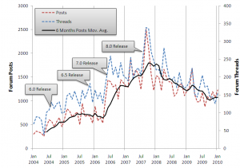

Manifold – Crossing the Chasm ?
[Update: I reran the user contribution analysis in March 2011 and wrote a blog post here]
First a disclaimer, my motivation for this post is not to discredit Manifold the software package or CDA International Ltd. I hesitated for a long time before finally deciding to post this very brief and probably flawed “analysis” based on many assumptions, with the aim to start an earnest discussion on the commercial development of Manifold GIS in a wider market context, based on more than just this starting point of analysis.
For the past 6 years the web forum Georeference has been the hub of the Manifold GIS user community, providing a virtual gathering place for users, enabling the development of a vibrant online community of expert users, sharing knowledge, discussing wider issues and helping novice users on a level that is very rarely encountered in other support forums. I believe it is fair to think that for many users of Manifold GIS, it is the first port of call when looking for information, help and advice with the software, before making use of paid support from Manifold directly. So as more licenses of Manifold are being sold and used , the number of forum users, posts and threads should increase in parallel. Given this premise, forum activity levels then act as a very imperfect proxy for the market penetration rate of the Manifold GIS software package. There are of course several caveats* to this theory.
The forum thankfully records and shares usage statistics (number of posts/threads per month). I assembled and visualised the growth in terms of forum threads and posts over the past 6 years in the graph attached below. In order to give some context, I also included the release dates of significant versions of Manifold on the graph.
One very fundamental observation from this graph is that since Manifold v8 has been released, there has been a decline of activity on the forum. Whereas in the preceding years, there was almost uninterrupted growth in user forum activity, right now, over two years after the release of v8, the forum contributions have returned to the level of mid 2006, and trend doesn’t imply a return to growth.Also notable has been the gap between the software release cycle prior to v8, and after. Whereas Manifold used to bring out a major revision each year (2004,2005, 2006,2007), for the past two years, users have been waiting for Manifold v9.
Given the caveats detailed below, what conclusions can the graph give us on the general business development context of Manifold?
I believe it is fair to say that CDA, the company developing Manifold GIS, are a high-tech software company (i hesitate to use the term start up, as they have been on the market for 8-10 years), which have a disruptive product, challenging the established GIS market in terms of pricing structure (and some may argue in terms of software quality/features). The study of disruptive technology innovations has been formalised in a number of theories, one very prominent one being the “Crossing the Chasm” model. This model aims to explain the specifics of marketing of high-tech products, and distinguishes two crucial stages: First, the product is marketed to and adopted by “visionaries”, a small set of users which form a small base of early adopters of the product. In order to gain mass market adoption though, the company crucially needs to gain enough momentum to jump the proverbial “Chasm” towards the pragmatists (early majority). A step at which many high-tech companies ultimately fail!
Manifold certainly has achieved a core basis of highly motivated early adopters which act as voluntary technology evangelists, as evidenced by the very supportive online community, as well as a number of user initiated meetings. From this basis, Manifold has over the past 4 years been working to gain momentum to cross the chasm towards the early majority in the GIS market, rapidly issuing improved software versions, opening a partner centre in Silicon Valley, starting to issue press releases and other media related activities. The success of these measures though lies in the continued rapid pace of updates being sold, given that Manifold do not levy annual maintenance fees from its existing user base.
In my opinion, as of right now, CDA Int. Ltd. are stuck in a limbo between an established early adopters user base, and the early majority user base they are trying to reach in order to significantly advance their market penetration. While they seem to be struggling to finish version 9, their existing user base seems to be eroding, increasingly frustrated by a lack of updates and activation issues, while many of the early majority users, more technically conservative, are holding back from buying in to Manifold, waiting to see what v9 brings to the table.
*Important caveats complicating the estimation of the number of users/licenses from forum activity levels :
- Not every user of Manifold is an active participant to the forum. Most likely only a very small percentage of Manifold users ever contribute to the forum.
- Most users will only participate when they have a problem/question they need advice for.
- A given person might be responsible for a varying number of Manifold licenses. This can range from one user with one license, to one administrator who is responsible for hundreds of licenses installed across a company, or embedded as a software component invisible to end users.

{kind=link}
{kind=link}
One quick comment is I feel most of the recent Manifold changes have been oriented towards scaling the functionality to really large, enterprise like data sets and collections. My personal opinion is focusing on the masses and making GIS / spatial analysis easier is a lot more compelling a value proposition for Manifold vs. chasing the embedded ArcGIS accounts (which are probably challenged / shrinking as is). It is kind of a re-segment / new market strategy which has risks. But getting into the enterprise support and enterprise spatial DB game is a lot higher risk / reward vs. trying to take advantage of the hugely growing interest in LBS and spatial data in the broader tech community.
Is that new threads per month, or active threads per month?
How did you harvest the data? I’ve been meaning to do somthing similar for a while, it would be nice to set this up as an ongoing monitor.
Probably should have specified that I simply took the stats that the forum provides, they dont specify what they mean by threads, I presume its new threads per month.
[...] Развитие и текущее состояние Manifold GIS. Частное мнение об экономике проекта. [...]
I have been a Manifold user since 2006. I originally purchased the software as an affordable alternative to ArcGIS to do some private consulting work. Back then the alternatives couldn’t match the functionality provided by Manifold for the price. With the growth of open source alternatives I’m not sure this is still the case.
The software is very good although it requires an experienced geospatial person to think in new ways. The software documentation is complete, but poorly organised. It could probably be edited down by half without losing any meaning. The software is also has some unique marketing that reminds me more of life insurance than a professional software product.
I have found the forums to be very helpful, but you need to do your homework first or you will get a “RTFM” from one of the company participants. I would be more sympathetic to that if I didn’t find the documentation so difficult to wade through.
I will continue to use Manifold and buy the upgrade if/when it ever arrives. I find myself supplementing my projects more & more with open source GIS software. If I had a spare $15K I would dump it all for ArcGIS.
I think this is a very good reading of the situation.
Hello.
Its an interesting analisys, i suspected that tyou would reach results like this.
we do not know a lot what’s really the deeph od manifold inside gis market, but for the price i suspect that is probably heavy.
This application has a old fashioned GUI but its effective, so lets see what v9 will bring.
I can’t believe that they wont release v9 this year, if they dont release as far as manifolds credebility will be seriouly damaged.
Regards.
Hi Patrick,
I like this analysis, and I would throw few other points into the thinking:
1) Another market disruption is having an impact, which includes new platforms for Internet mapping such as the GYM APIs, which make Manifold GIS proposition of cheap IMS less relevant
2) Yet another disruption is the FOSS4G, with products such as QGIS that are starting to be viable alternative to commercial GIS – and they are free. So the ‘cheap but powerful’ is not as relevant as it was only few years ago. While Manifold GIS users will claim that Manifold GIS is much more powerful, what is important that for a lot of entry level users FOSS4G is good enough, and that what matters in ‘purchase’ decisions. Ironically, there is better support and free tutorials for QGIS than to Manifold GIS.
3) We saw a decline in interest in Manifold GIS training over the past year. Interestingly, it also provided evidence of people who considered to go for Manifold GIS but the v.9 delay led them to avoid using the product.
4) I watch with alarm the focus of CDA on CUDA. It doesn’t matter to most GIS users, and it is odd to see a product digging itself into a hole of irrelevance – my guess is that will provide another reason not to buy the product for many people.
Summer 2007 also marks the start of the credit crunch and ‘global downturn’ – smaller budgets, fewer jobs, less GIS…fewer problems?
I agree with your analysis in the main text and in your later comment especially about the over-reliance on CUDA.
However, as of November 2010 Manifold.net faces major legal problems. It is being sued along with other for patent infringement by Uniloc Inc. Not for anyhting to do with GIS, but to do with the technology of generating a license key unique to the hardware that a licensed software product is to be installed on, that will unlock the software product to allow its unlimited use.
http://amlawdaily.typepad.com/UnilocNov8Complaint.pdf
In addition to a request to award Uniloc damages and costs, one of the requests to the court being made by Uniloc, is that those who have infringed Uniloc’s patent, be permanently prevented from publishing existing and new software products unlocked using the patented license key generation system.
S.
when look at the statistic page of the forum, the graphic information you give could be guess. I think focus on gpu and 64 bit and intruction ( sse) and all new infrastructure ( .NET/managed code) , effective 3D/2D raster/vector/sql engine is a big step and ll take time to implement.
[...] semana, Patrick Webber –de Spatial Knowledge- ha hecho una temeraria declaración que seguro ha puesto a temblar las mismas barbas de los [...]